Iinan, Shimane: things to do, food and stays
Iinan · Shimane
Iinan
Highlighted on the Shimane map.

Stay
星の宿り ＾
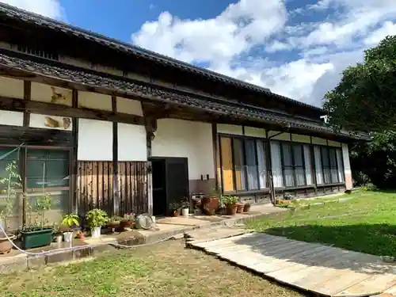
Hoshi No Yadori ^
古屋敷ガーデン中西 ＾
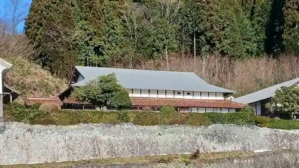
Furuyashiki Garden Nakanishi ^
Dining
奥出雲 そば処 一福 頓原本店
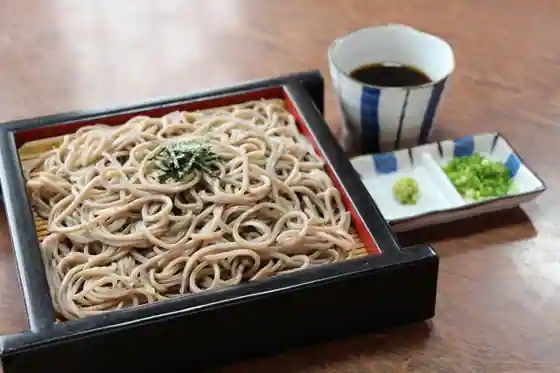
Okuizumo Soba Tokoro Ichi Fuku Tonbara Hon
森のカフェ ラムネMILK堂
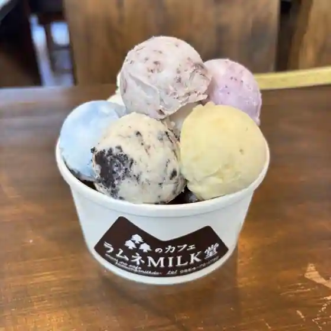
Mori No Cafe Ramune MILK Do
ステーキハウス 萠美野
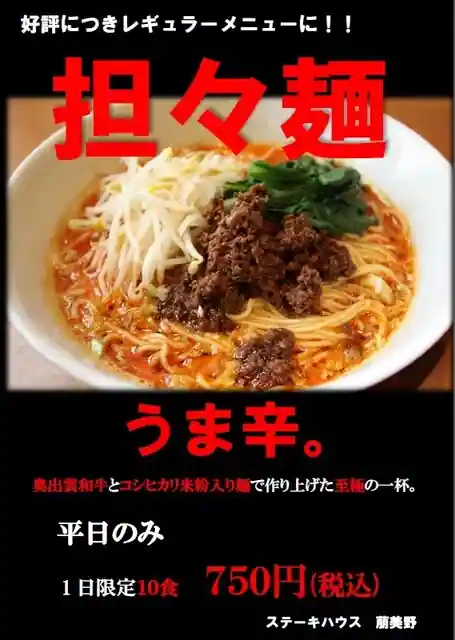
Steak House Ho Mino
きらく食堂
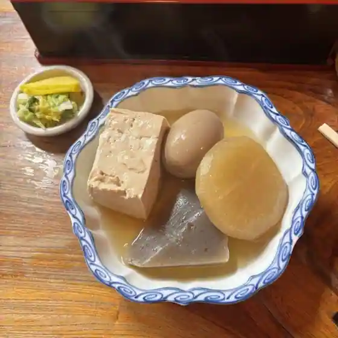
Kiraku Shokudo
うぐいす茶屋
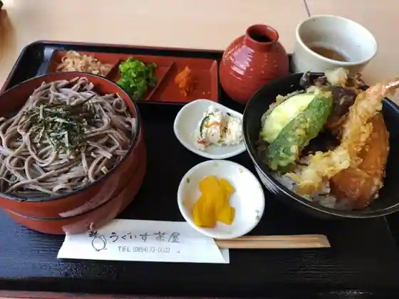
Uguisu Chaya
野趣料理 ミセス ロビンフッド
Yashu Ryori Misesu Robinfuddo
道の駅 とんばら
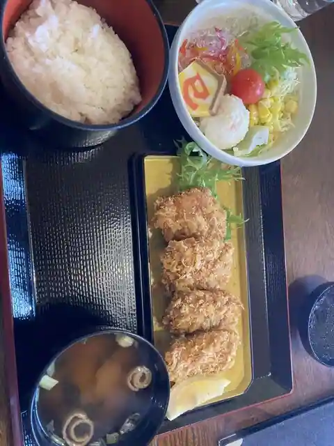
Michi No Eki Tonbara
いいなんキッチン ミエル
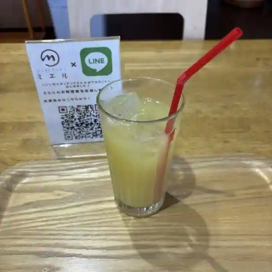
Inan Kitchen Mieru
KANEYA Cafe
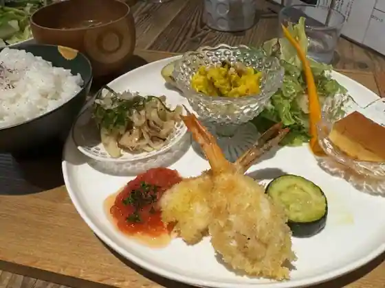
KANEYA Cafe
琴引ビレッジ山荘
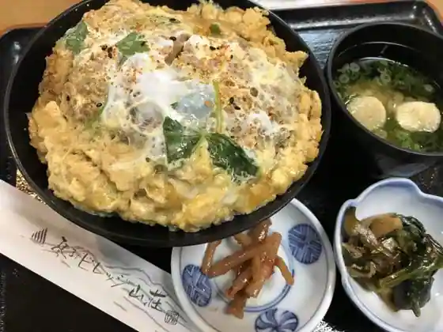
Kotobiki Birejji Sanso
森のホテル もりのす
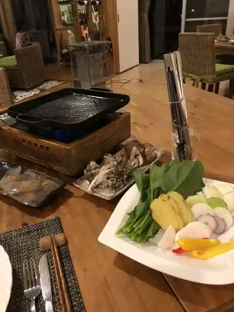
Mori No Hotel Morinosu
もんこちゃんのお店
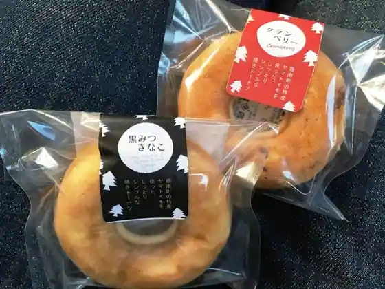
Monkochanno
ステッチ
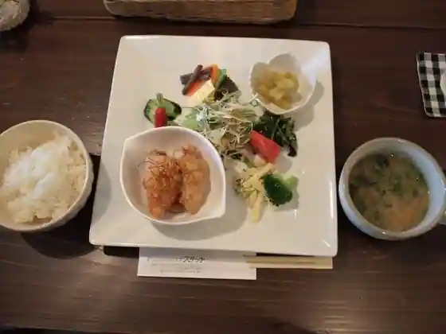
Sutetchi
ROUTE54+
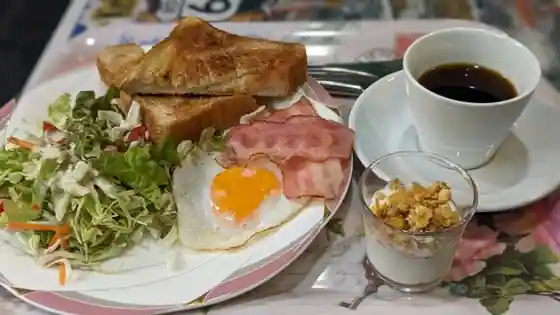
ROUTE54+
しのぶ
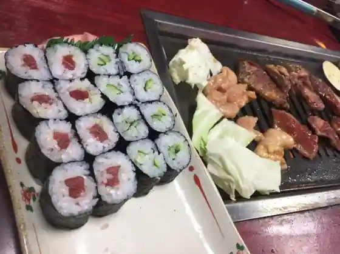
Shinobu
ごんべえ茶屋
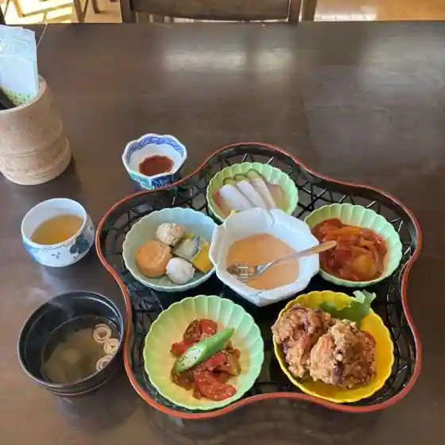
Gonbe Chaya
吉川吉盛堂
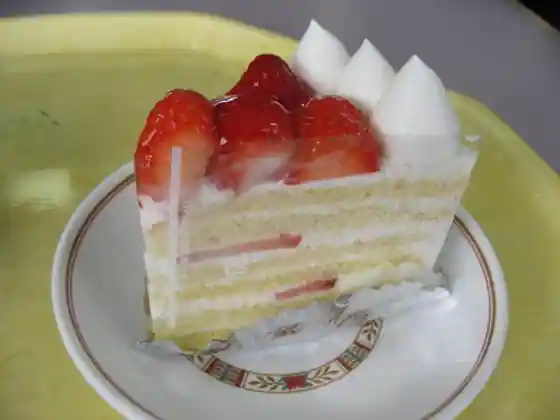
Yoshikawa Yoshimori Do
Sights
Tombara Tennen Tansan Onsen Ramune Ginsen

Roadside Station (Akagi Highlands)

Iinan Furusato Forest (Shinrin Serapii Mori no Hotel Mori no Su Campground)

Kada Baths

Okuizumo Teuchi Chisoba Tokoro Ichi Fuku Main Shop
Kon Dan Yama Shrine
Wani Ryori
Akana Kanko Botan Sono
Iinan Taishi Menawa Sosaku Kan
Kotobiki Foresuto Park Ski Area
Roadside Station (Tombara)
Kotobiki Yama
Tombara Miso
Roadside Station Tombara Resutohausu Yamanami
Sutekihausu Ho Mino
Yurai Hachiman Shrine no Osugi
Rai Shima Dam
Aozora City Buna Village
Akana Hachiman Shrine
Ikoi no Sato Koromo Kakari
Misesu Robinfuddo (Resutoran)
Kafe *handmade Zakka Sutetchi
Kotobiki Birejji Sanso
Iinan Town Hall